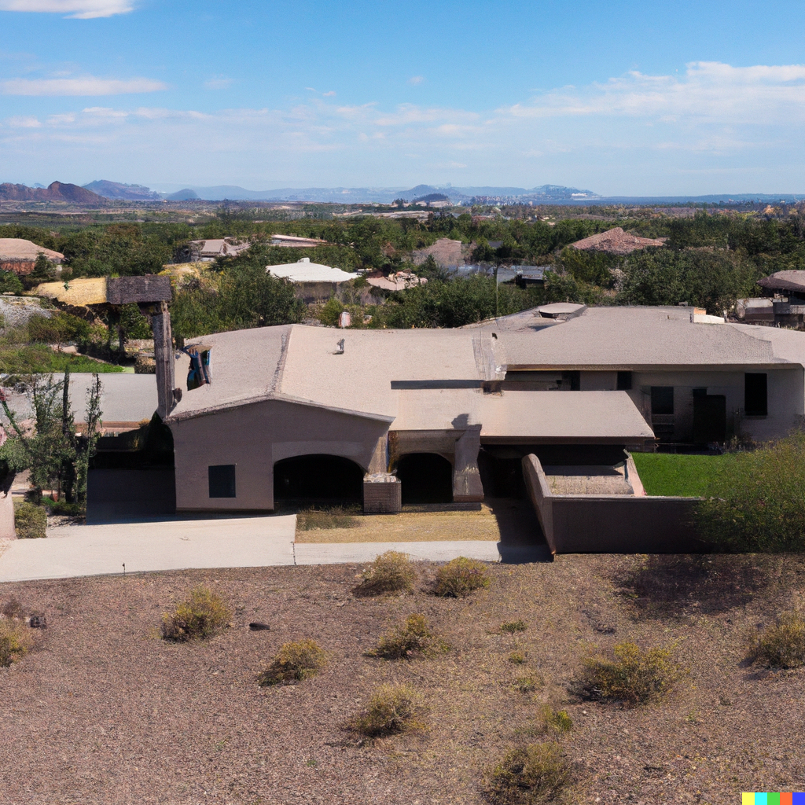

Welcome to Higley HOA! We are a friendly and vibrant community of homeowners who enjoy living in Gilbert, Arizona. Our neighborhood offers a variety of amenities and activities for residents of all ages and interests. Whether you like to relax by the pool, play basketball with your kids, or join a book club, you will find something to suit your lifestyle here. Our HOA is committed to maintaining the beauty and value of our homes and common areas, as well as fostering a sense of community and belonging among our members. We invite you to explore our website and learn more about our HOA, our events, our documents, and our contacts. If you have any questions or suggestions, please feel free to reach out to us. We look forward to hearing from you and welcoming you to our community!
Who We Are:

We are a friendly and vibrant community of homeowners who enjoy living in Gilbert, Arizona. Our neighborhood offers a variety of amenities and activities for residents of all ages and interests. Whether you like to relax by the pool, play basketball with your kids, or join a book club, you will find something to suit your lifestyle here.
Our Commitments:
Our HOA is committed to maintaining the beauty and value of our homes and common areas, as well as fostering a sense of community and belonging among our members. We invite you to explore our website and learn more about our HOA, our events, our documents, and our contacts. If you have any questions or suggestions, please feel free to reach out to us. We look forward to hearing from you and welcoming you to our community!
Here's some beautiful views we're prepared to showcase our community: